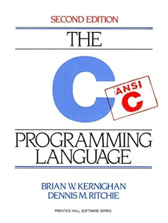
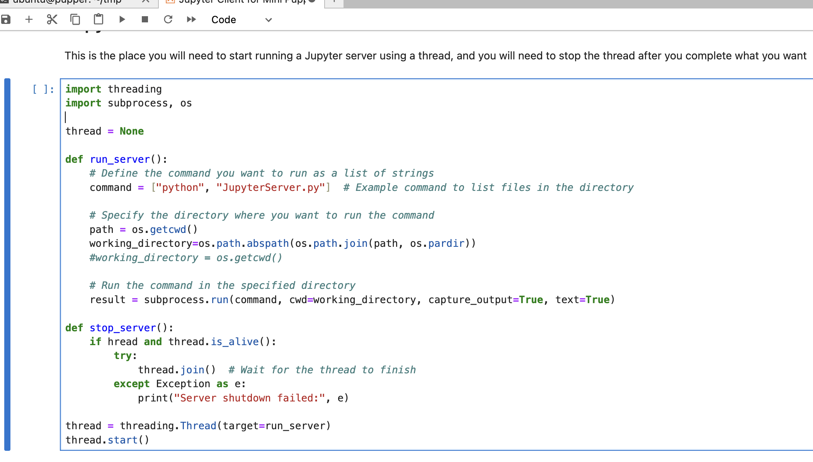
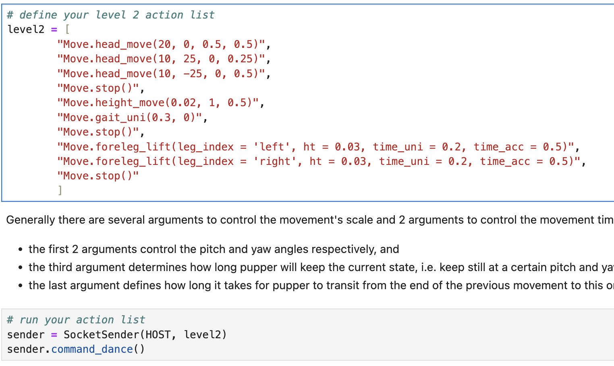
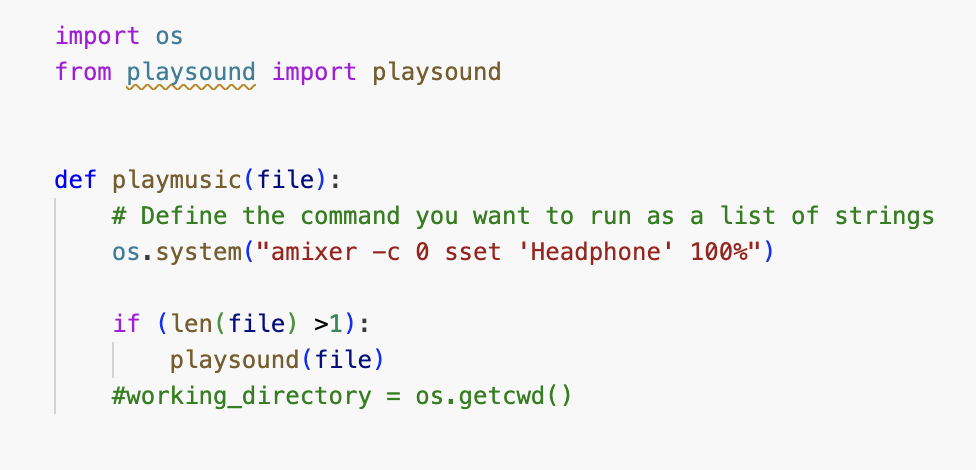
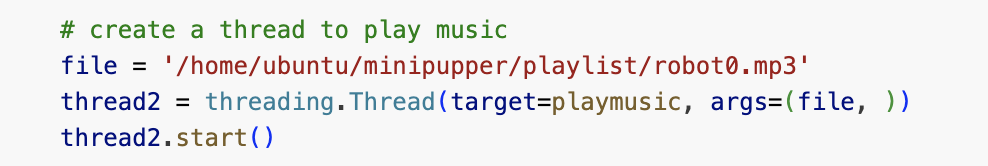

![]()
flowchart LR
A(("Start up")) --> B(("Python Skill"))
A --> C(("Linux Skill"))
B --> D(("Dance code in Jupyter"))
C --> D
D --> E(("Final Project"))
%% Define custom styles for each node
classDef nodeStyle width:150px, text-align:center, white-space:pre-wrap;
%%classDef coloredNode fill:#1f96,stroke:#333,stroke-width:2px,width:150px,white-space:pre-wrap,text-align:center;
%%classDef funNode fill:#ef96,stroke:#333,stroke-width:2px,width:150px,white-space:pre-wrap,text-align:center;
%% Apply the custom style to the nodes
class A,B,C,D,E nodeStyle;
%%class B,H coloredNode;
%%class D,F,G funNode;
%% Add slide references to each block (adjust according to your presentation setup)
click A "#software" "Go to Software setup slide"
click B "https://lbaitemple.github.io/ECE3432/2024/week8" "Go to Python slide"
click C "#linux" "Go to Hardware slide"
click D "#dance" "Go to Google Gemini slide"
click E "#finalproject" "Go to ROS slide"
Robotic Control using Raspberry Pi
Lecture 9 - A minimal introduction to Linux
November 12, 2024
Learning Path
Introduction
Note
- Linux is a powerful and widely-used operating system that forms the foundation of numerous technologies and infrastructures, from web servers to embedded devices.
- Linux skills are highly sought-after in the tech industry, as many companies and organizations rely on Linux-based systems for their operations.
- Learning Linux opens up a wide range of career opportunities and enhances your technical expertise.
Note
- Linux powers a significant portion of the internet, including popular websites, cloud platforms, and data centers.
- DevOps practices heavily rely on Linux for efficient deployment, automation, and containerization using tools like Docker and Kubernetes.
- Linux provides a stable, secure, and customizable environment for software development, system administration, and networking.
- With the rise of IoT (Internet of Things) devices, Linux is a common choice for building embedded systems and IoT gateways.
- Understanding Linux gives you the ability to troubleshoot and resolve issues in various computing environments, enhancing your problem-solving skills.
Linux Based on Processors
x86/x86_64 Architecture:
- The x86 architecture, also known as Intel or AMD architecture
ARM architecture
- The arm8/arm64/aarch64 is prevalent in mobile devices, embedded systems, and IoT devices.
Power Architecture
- developed by IBM, is commonly used in high-performance computing and enterprise-level servers.
Other Architectures:
- Linux supports various other processor architectures, including MIPS, SPARC, and RISC-V.
Linux Distributions
- One of the most popular and user-friendly Linux distributions.
- Based on Debian and known for its stability, ease of use, and large community support.
- Offers different flavors such as Ubuntu Desktop, Ubuntu Server, and Ubuntu for IoT.
- Developed by the Fedora Project, sponsored by Red Hat.
- Emphasizes the use of open-source software and the latest technologies.
- Frequent updates and a focus on innovation make it suitable for developers and enthusiasts.
- Derived from the sources of Red Hat Enterprise Linux (RHEL).
- Provides a stable, secure, and free alternative to RHEL.
- Popular for server deployments and enterprise environments.
- Known for its strict adherence to the principles of free software and stability.
- Serves as the foundation for many other Linux distributions, including Ubuntu.
- Offers a wide range of software packages and a robust package management system.
- A lightweight and highly customizable distribution.
- Follows a rolling-release model, providing continuous updates and the latest software versions.
- Designed for experienced users who prefer a DIY approach and desire full control over their system.
- Community-driven distribution supported by SUSE.
- Offers both stable and rolling-release versions (Leap and Tumbleweed, respectively). Known for its strong focus on ease of use, stability, and comprehensive administration tools.
Invention of Unix
Note
Prior to 1973, Unix was written in assembler language, but the fourth edition was rewritten in C. This was revolutionary at the time because OSes were thought to be too complex and sophisticated to be written in C, a high-level language. This increased Unix’s portability across multiple computing platforms.
Ken Thompson (sitting) and Dennis Ritchie
A Famous C book
 
Brian Kernighan (Princeton University Professor - Dec. 13, 2018)
Invention of Linux

Linux began in 1991 as a personal project by Finnish student Linus Torvalds
It has grown from a small number of C files under a license prohibiting commercial distribution to the 4.15 version in 2018 with more than 23.3 million lines of source code,
Basic Commands on Linux
Learning essential commands
- ls: list file in the system
- cd, pwd, mkdir, and rm for navigating the file system.
- shortcut commands
Linux Basics
- File Manipulation
- Skills for creating, copying, moving, and deleting files and directories.
- creating a file
touch filename - copyign a file to a new file
cp src_file dest_file - rename (or move) a file
mv src_file dest_file
- creating a file
Text Processing
What are the wild cards
*and?
regular expression (example later)
file redirect
>or>>(write to output or append to output)file redirect
<(reaf as an input)pipeline
|(output from one command as input of another command)- so multiple commands can be used consecutively
- ls -l command
The first character represents the type of the file
- **`-`** for regular files - **`d`** for directories - **`l`** for symbolic links - **`c`** for character device files - **`b`** for block device files - **`p`** for named pipes - **`s`** for socket files
The next three characters represent permissions for the file owner (user). These are, in order, read, write, and execute permissions.
- **`r`** (read): Allows the user to view the file's contents. - **`w`** (write): Allows the user to modify the file or delete it. - **`x`** (execute): Allows the user to run the file if it's a program or script.
- The following three characters represent permissions for the group that owns the file.
- **`r`** (read): Allows group members to read the file.
- **`w`** (write): Allows group members to modify the file.
- **`x`** (execute): Allows group members to execute the file if applicable.- The last three characters represent permissions for others (users who don't own the file and aren't in the group).
- **`r`** (read): Permits others to read the file.
- **`w`** (write): Permits others to modify the file.
- **`x`** (execute): Permits others to execute the file if applicable.Common examples of file permissions:
rw-r--r--: This permission set allows the owner to read and write the file, while others can only read it.drwxr-xr-x: For a directory, this permission set allows the owner to read, write, and access (enter) the directory, while others can only access it.-rwxr-x---: This permission set allows the owner to read, write, and execute the file, the group can read and execute it, but others have no permissions.
Change Permission
chmodcommand: You can change file permissions- e.g.
chmod u+rw filename - e.g.
cmod 755 filename
- e.g.
chowncommand: change the ownership of a file- e.g.
chown -R ubuntu:ubuntu filename
- e.g.
commands to know your Linux system
- update and upgrade latest software
- find software available
- find software installed
bash run command file
check which shell environment
echo $SHELL“/bin/bash” for the Bash shell
start up file (.bashrc) - bash run command file
setup environment variables
setup alias
Other important Linux cmds
environment variable
- display environment variable
- set environment variable
Regular Expression - examples
^[A-Z]:matches a string that starts with an uppercase letter.\d{3,5}:matches a sequence of 3 to 5 digits..+@.+\..+:matches an email address in a simple format.[A-Za-z]+:matches one or more alphabetical characters.(red|blue): matches either “red” or “blue.”
shell scripts
- a text file containing a series of shell commands and other programming constructs that can be executed as a script (test.sh)
Shell script example
#!/bin/bash
# This is a Bash script with a simple condition
echo "Hello, World!"
# Define variables
name="John"
age=30
# Print variable values
echo "My name is $name and I am $age years old."
# Define an age threshold
age_threshold=18
# Add a condition to check if the person is an adult
if [ "$age" -ge "$age_threshold" ]; then
echo "I am an adult."
else
echo "I am not an adult."
fiDance Move using Jupyter
- make a directory called tmp
- git clone a repository in minipupper
- navigate into the folder `
Jupyter Client`folder - run jupyter client code `jupyter Client for Minipupper`


- run server code

- run client code


- run client code 
- run client code


Ideas to include Music
- check play.py 
- add additional thread 
Final project
- final project with line following and target identification
- how to include the jupyter notebook code to ROS2

Li Bai